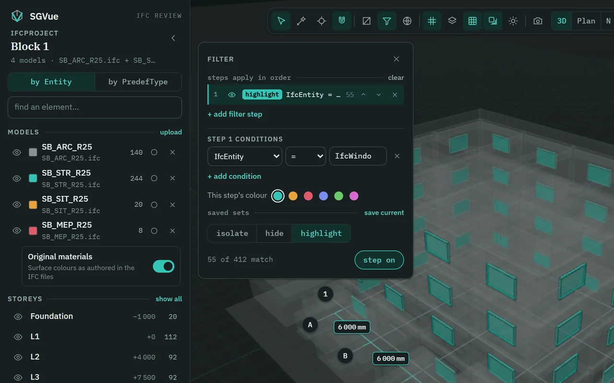
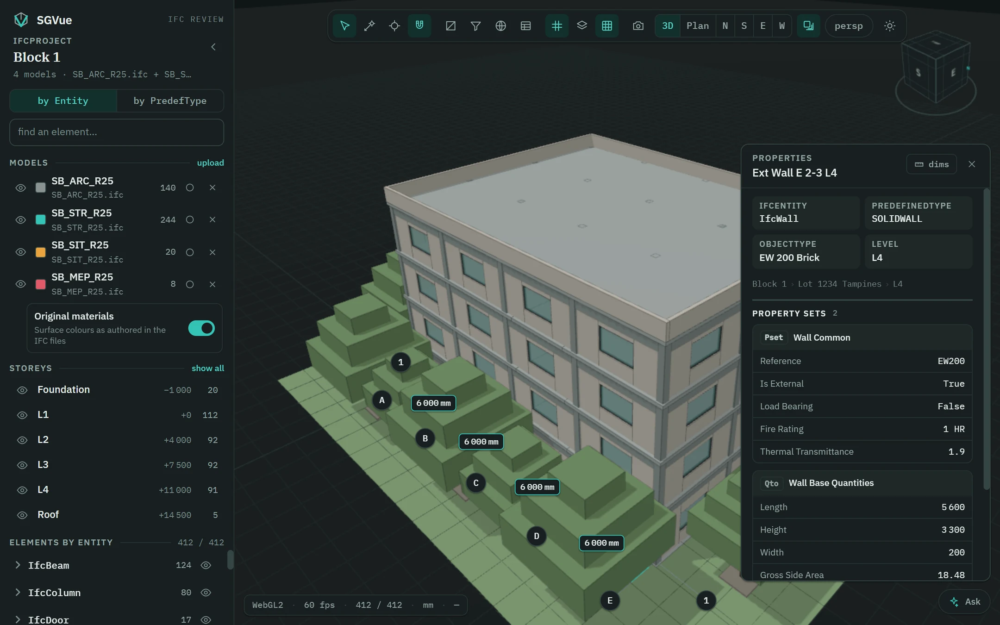
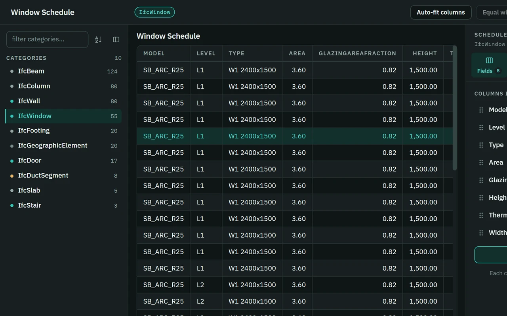
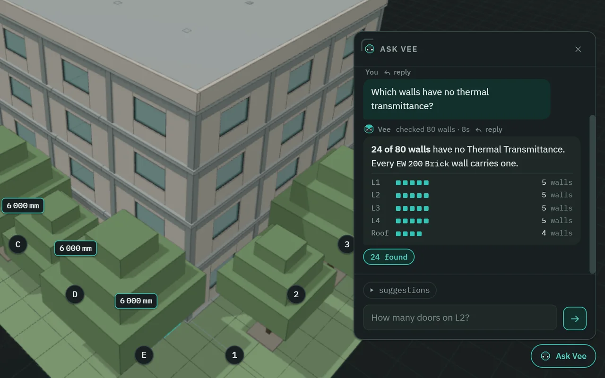
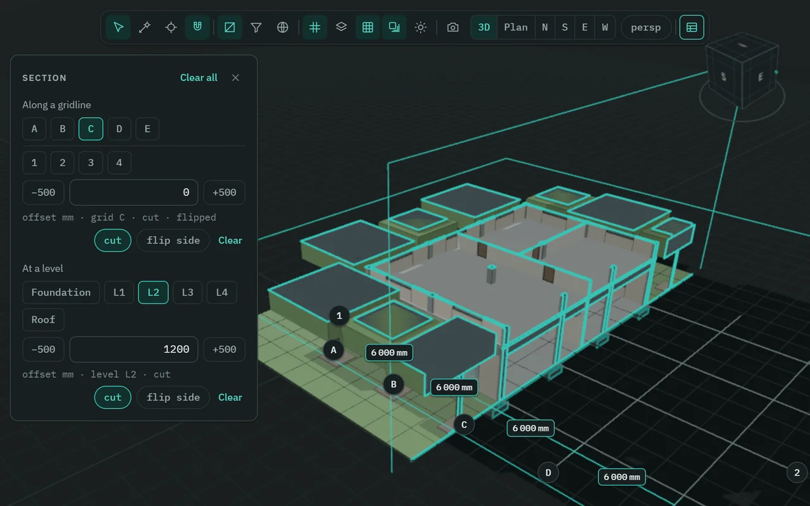
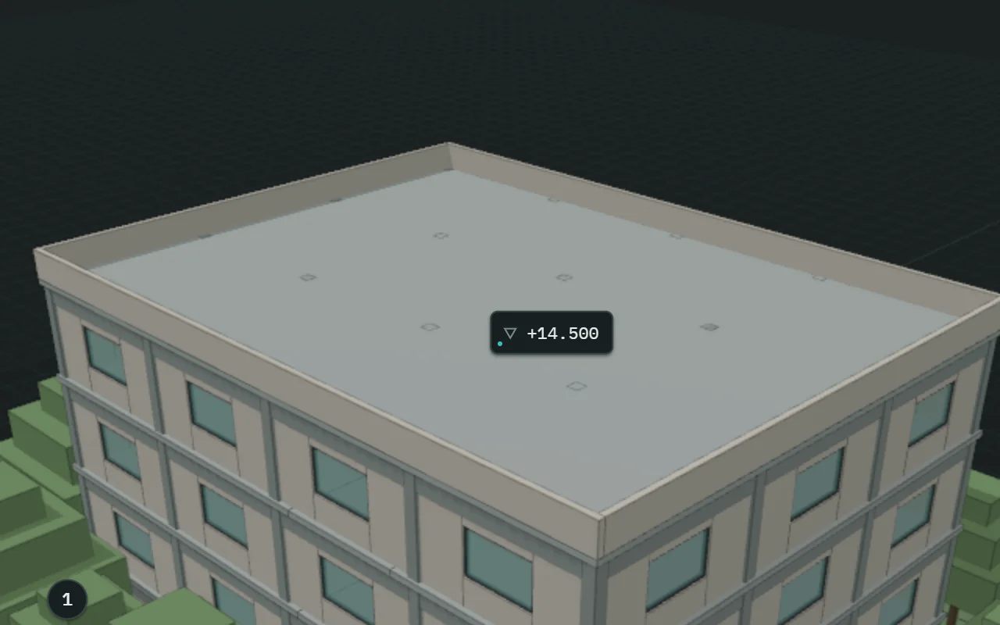

One federation, every storey and grid
Open several IFC files together and review them as one model. Walk the storeys and gridlines, and filter by any property to highlight, hide or isolate what matters.

A read-only IFC viewer for BIM coordination review. Open a federation, walk its storeys and grids, cut sections, build schedules and ask questions — your models stay on your computer.

What it does
Open several IFC files together and review them as one model. Walk the storeys and gridlines, and filter by any property to highlight, hide or isolate what matters.

Revit-style schedules of any IFC class, in a window of their own. Click a row to see it in 3D, and export to Excel when you are done.

An assistant that can look but never touch: ask how many doors are on L2, or which walls have no fire rating, and it answers from the file. It uses your own Anthropic API key.

Cut along any gridline or level. Everything the plane passes through is outlined in a thick accent line, so the cut reads at a glance.

With the spot tool (C), click a surface to pin its level, like ▽ +14.500. Click the tag for the full E, N and Z.

SGVue only ever reads your IFC files: nothing is written into them and nothing is uploaded. Ask SGVue is optional — when you use it, your question and what it reads to answer go to Anthropic under your own key.
Install and update
Get the setup file with the Download for Windows button above.
SGVue is not code-signed yet, so Windows may say Windows protected your PC. Choose More info, then Run anyway.
The setup wizard tells you which it will do. Updating keeps your settings, API key, recent files and saved views.
In SGVue, Help › Check for updates shows you the newest version.